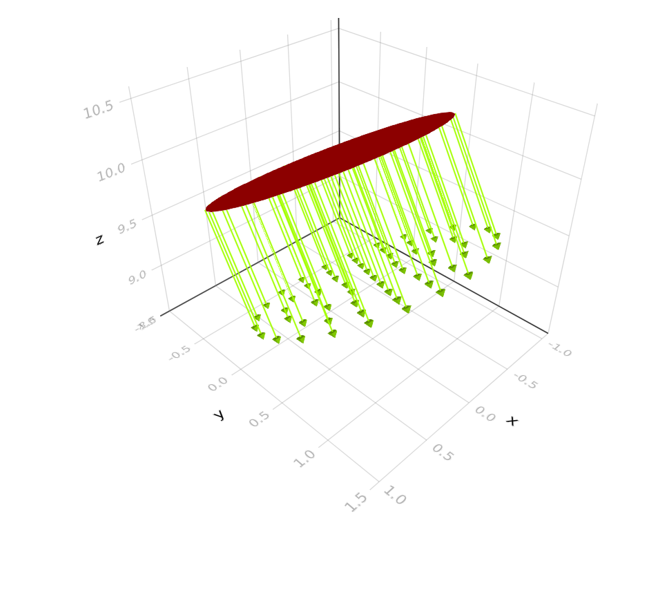
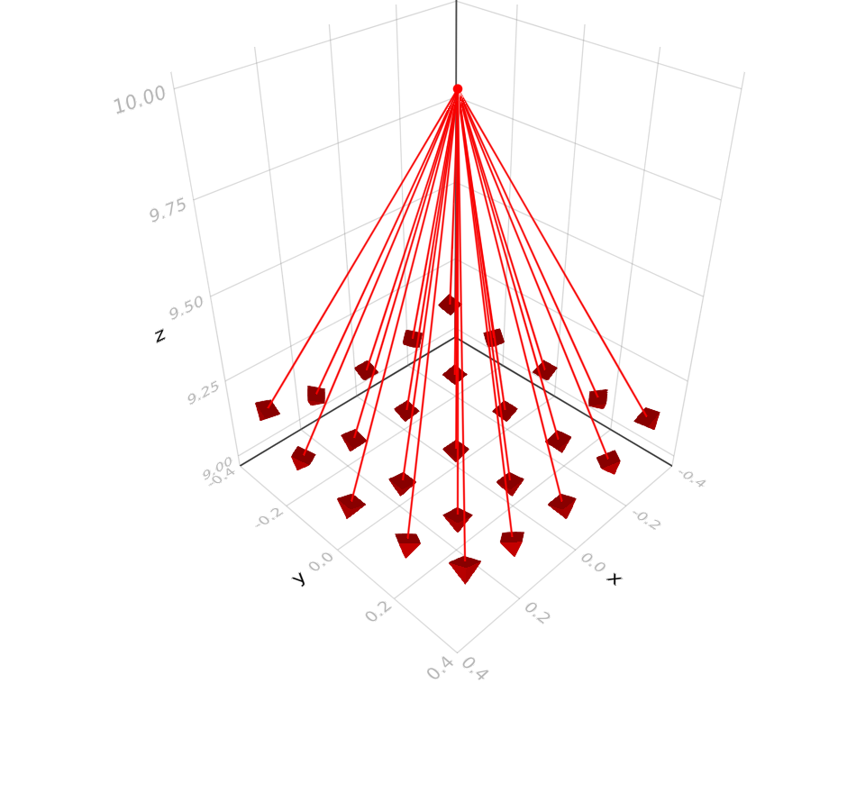
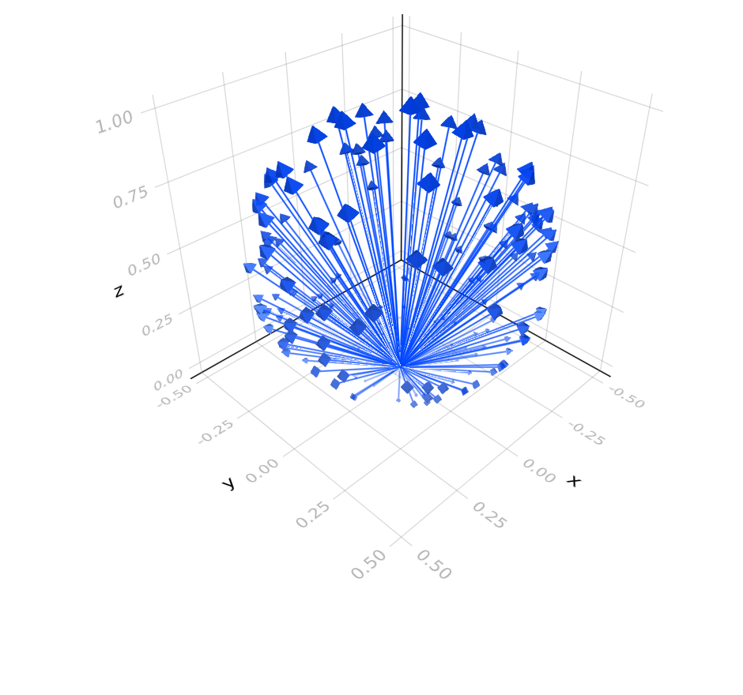

Emitters
Emitters create rays in a certain pattern, usually controlled by some parameters. The are constructed in a modular way, e.g.
Vis.draw(UniformOpticalSource(CollimatedSource(HexapolarOriginPoints(4, 1.0, 1.0, position = SVector(0.0, 0.0, 10.0), direction = SVector(0.0, sind(30), -cosd(30)))), 0.55))
Vis.draw(UniformOpticalSource(GridSource(OriginPoint{Float64}(1, position = SVector(0.0, 0.0, 10.0), direction = SVector(0.0, 0.0, -1.0)), 5, 5, π / 4, π / 4), 0.65))
Vis.draw(CosineOpticalSource(RandomSource(OriginPoint{Float64}(200, direction = SVector(0.0, 0.0, 1.0))), 1.0, 0.45))
Rays
OpticSim.Ray — TypeRay{T,N} <: AbstractRay{T,N}Purely geometric ray, defined as origin + alpha * direction.
Ray(origin::SVector{N,T}, direction::SVector{N,T})Has the following accessor methods:
direction(ray::Ray{T,N}) -> SVector{N,T}
origin(ray::Ray{T,N}) -> SVector{N,T}OpticSim.OpticalRay — TypeOpticalRay{T,N} <: AbstractRay{T,N}Ray with power, wavelength and optical path length.
NOTE: we use monte carlo integration to get accurate results on the detector, this means that all rays essentially hit the detector with power = 1 and some rays are thrown away at any interface to correctly match the reflection/transmission at that interface. For inspection purposes we also track the 'instantaneous' power of the ray in the power field of the OpticalRay.
OpticalRay(ray::Ray{T,N}, power::T, wavelength::T, opl=zero(T))
OpticalRay(origin::SVector{N,T}, direction::SVector{N,T}, power::T, wavelength::T, opl=zero(T))Has the following accessor methods:
ray(r::OpticalRay{T,N}) -> Ray{T,N}
direction(r::OpticalRay{T,N}) -> SVector{N,T}
origin(r::OpticalRay{T,N}) -> SVector{N,T}
power(r::OpticalRay{T,N}) -> T
wavelength(r::OpticalRay{T,N}) -> T
pathlength(r::OpticalRay{T,N}) -> T
sourcepower(r::OpticalRay{T,N}) -> T
nhits(r::OpticalRay{T,N}) -> Int
sourcenum(r::OpticalRay{T,N}) -> IntOpticSim.generateray — Functiongenerateray(o::GeometricRayGenerator{T}, n::Int) -> Ray{T,3}Generate geometric rays distributed according to the type of the generator. n is the index of the point being generated, starting from 0. This has little meaning for random generators, but is important for GridSource, for example.
generateray(o::OpticalRayGenerator{T}, n::Int) -> OpticalRay{T,3}Generate optical rays distributed according to the type of the generator. n is the index of the point being generated, starting from 0. This has little meaning for random generators, but is important for generators using GridSource or GridRectOriginPoints, for example.
generateray(a::PixelSource{T}, n::Int) -> OpticalRay{T,3}Generates optical rays from all subpixels in the pixel. One ray is generated from each subpixel sequentially before looping back to the start.
generateray(a::OpticalSourceArray{T}, n::Int) -> OpticalRay{T,3}Generates optical rays from all generators in the array. One ray is generated from each element sequentially before looping back to the start of the array.
generateray(a::BasicDisplayPanel{T}, n::Int) -> OpticalRay{T,3}Generates optical rays from all pixels in the display. One ray is generated from each pixel sequentially before looping back to the start of the display.
generateray(a::OpticalSourceGroup{T}, n::Int) -> OpticalRay{T,3}Generate optical rays for each source in the group. All rays are generated for the first source, then all for the second source and so on as n increases.
Origin Points
OpticSim.RayOriginGenerator — TypeRayOriginGenerator{T<:Real}Generates 3D points in world space which serve as origins for rays.
OpticSim.RandomRectOriginPoints — TypeRandomRectOriginPoints{T} <: RayOriginGenerator{T}Generates ray origins randomly within a rectangle.
RandomRectOriginPoints(numrays, halfsizeu, halfsizev; position = (0.0, 0.0, 0.0), direction = (0.0, 0.0, -1.0), rotationvec = (0.0, 1.0, 0.0))OpticSim.GridRectOriginPoints — TypeGridRectOriginPoints{T} <: RayOriginGenerator{T}Generates ray origins on a rectangular grid.
GridRectOriginPoints(numraysu, numraysv, halfsizeu, halfsizev; position = (0.0, 0.0, 0.0), direction = (0.0, 0.0, -1.0), rotationvec = (0.0, 1.0, 0.0))OpticSim.RandomEllipseOriginPoints — TypeRandomEllipseOriginPoints{T} <: RayOriginGenerator{T}Generates ray origins randomly across an ellipse.
RandomEllipseOriginPoints(numrays, halfsizeu, halfsizev; position = (0.0, 0.0, 0.0), direction = (0.0, 0.0, -1.0), rotationvec = (0.0, 1.0, 0.0))OpticSim.HexapolarOriginPoints — TypeHexapolarOriginPoints{T} <: RayOriginGenerator{T}Generates ray origins in a hexapolar pattern.
HexapolarOriginPoints(nrings::Int, halfsizeu::T, halfsizev::T; position = (0.0, 0.0, 0.0), direction = (0.0, 0.0, -1.0), rotationvec = (0.0, 1.0, 0.0))OpticSim.OriginPoint — TypeOriginPoint{T} <: RayOriginGenerator{T}Single point origin for a source.
OriginPoint{T}(numrays; position = (0.0, 0.0, 0.0), direction = (0.0, 0.0, -1.0), rotationvec = (0.0, 1.0, 0.0))OpticSim.genorigin — Functiongenorigin(o::RayOriginGenerator{T}, n::Int) -> SVector{3,T}Generate origin positions for rays based on the type of the generator, e.g., randomly within a rectangle or ellipse. n is the index of the point being generated, starting from 0. This has little meaning for random generators, but is important for HexapolarOriginPoints and GridRectOriginPoints.
Directions
OpticSim.GeometricRayGenerator — TypeGeometricRayGenerator{T,O<:RayOriginGenerator{T}} <: AbstractRayGenerator{T}Generates geometric Rays according to the specific implementation of the subclass.
OpticSim.CollimatedSource — TypeCollimatedSource{T,O} <: GeometricRayGenerator{T,O}Source which generates collimated rays.
CollimatedSource(generator::RayOriginGenerator)OpticSim.GridSource — TypeGridSource{T,O} <: GeometricRayGenerator{T,O}Source which generates rays in directions which fall on an even grid on a rectangle subtended by angles halfangleu, halfanglev.
GridSource(generator::RayOriginGenerator, numraysu, numraysv, halfangleu, halfanglev)OpticSim.RandomSource — TypeRandomSource{T,O} <: GeometricRayGenerator{T,O}Source which generates rays in directions sampled randomly from the solid angle ±θmax centred on the direction of the source.
RandomSource(generator::RayOriginGenerator, numrays = 1, θmax = T(π / 2))OpticSim.gendirection — Functiongendirection(o::GeometricRayGenerator{T}, n::Int) -> SVector{3,T}Generate directions for rays based on the type of the generator, e.g., randomly within a cone or collimated. n is the index of the point being generated, starting from 0. This has little meaning for random generators, but is important for GridSource.
Power
OpticSim.OpticalRayGenerator — TypeOpticalRayGenerator{T} <: AbstractRayGenerator{T}Generates OpticalRays according to the specific implementation of the subclass.
OpticSim.UniformOpticalSource — TypeUniformOpticalSource{T,O,P} <: OpticalRayGenerator{T}Source of OpticalRays with uniform power.
UniformOpticalSource(generator::GeometricRayGenerator, centralwavelength, power = 1.0; sourcenum = 0)OpticSim.CosineOpticalSource — TypeCosineOpticalSource{T,O,P} <: OpticalRayGenerator{T}Source of OpticalRays with power defined by: $I(\theta) \approx I_0(\cos\theta)^C$ Where $\theta$ is the angle of the ray to the central direction of the source, and $C$ is the cosineexp parameter.
CosineOpticalSource(generator::GeometricRayGenerator, cosineexp, centralwavelength, power = 1.0; sourcenum = 0)OpticSim.GaussianOpticalSource — TypeGaussianOpticalSource{T,O,P} <: OpticalRayGenerator{T}Source of OpticalRays with power defined by: $I(\theta) \approx I_0e^{-(G_ul^2 + G_vm^2)}$ Where $l$ and $m$ are the direction cosines in the u and v directions to the central direction of the source, and $G_u$ and $G_v$ and the gaussianu and gaussianv parameters.
GaussianOpticalSource(generator::GeometricRayGenerator, gaussianu, gaussianv, centralwavelength, power = 1.0; sourcenum = 0)Compound
OpticSim.PixelSource — TypePixelSource{T,C} <: RayGenerator{T}Ray generator which encapsulates a number of subpixels, rays are generated in each subpixel in an interleaved manner. The subpixels must be positioned correctly relative to each other when input to the constructor.
All subpixels must be coplanar, the orientation of the pixel and any display made using the pixel is taken from the first subpixel. All subpixels must have the same number of rays (if we make subpixels be handled sequentially we wouldn't need this). All subpixels must be of the same type.
PixelSource(subpixels::Vector{OpticalRayGenerator}; colormap = nothing, position = (0, 0, 0))
PixelSource(subpixels::Vararg{OpticalRayGenerator}; colormap = nothing, position = (0, 0, 0))OpticSim.OpticalSourceArray — TypeOpticalSourceArray{T} <: RayGenerator{T}Generates rays from an array of the given source at the specified locations.
OpticalSourceArray(generator::OpticalRayGenerator, positions::Vector{SVector{3,T}})OpticSim.BasicDisplayPanel — TypeBasicDisplayPanel{T,C} <: RayGenerator{T}Ray generator representing a simple panel display. The panel is flat and pixles are on a regular rectangular grid. Each pixel corresponds to one image pixel.
BasicDisplayPanel(pixel::PixelSource, pitchx, pitchy, image, position = (0, 0, 0))
BasicDisplayPanel(generator::OpticalSourceArray{T,PixelSource}, pixelvals::Vector{Union{T,Vector{T}}})OpticSim.OpticalSourceGroup — TypeOpticalSourceGroup{T} <: RayGenerator{T}Wrapper to group a number of separate optical sources into a single iterable object. If the sources of the same type then performance will be improved.
OpticalSourceGroup(generators::Vector{<:OpticalRayGenerator})
OpticalSourceGroup(generators::Vararg{OpticalRayGenerator})OpticSim.RayListSource — TypeRayListSource{T} <: OpticalRayGenerator{T}Ray generator constructed manually from a list of rays which just outputs those rays in order.
RayListSource(rays::Vararg{OpticalRay})
RayListSource(rays::Vector{OpticalRay})Fields
OpticSim.HexapolarField — FunctionHexapolarField(sys::AxisymmetricOpticalSystem; collimated = true, samples = 8, wavelength = 0.55, sourcepos = (0.0, 0.0, 3.0), sourceangle = 0.0, sourcenum = 0)Distributes rays over the entrance pupil of the system in a hexapolar pattern.
HexapolarField(semidiameter, pupilpos; collimated = true, samples = 8, wavelength = 0.55, sourcepos = (0.0, 0.0, 3.0), sourceangle = 0.0, sourcenum = 0)Distributes rays over a circular pupil with half-diameter defined by semidiameter, centred at pupilpos in a hexapolar pattern. samples is the number of rings in the hexapolar pattern, so the number of rays in total is samples * (samples + 1) / 2) * 6 + 1.
OpticSim.GridField — FunctionGridField(sys::AxisymmetricOpticalSystem; collimated = true, samples = 20, wavelength = 0.55, sourcepos = (0.0, 0.0, 3.0), sourceangle = 0.0, sourcenum = 0)Distributes rays over the entrance pupil of the system in a rectangular grid pattern.
GridField(semidiameter, pupilpos; collimated = true, samples = 20, wavelength = 0.55, sourcepos = (0.0, 0.0, 3.0), sourceangle = 0.0, sourcenum = 0)Distributes rays over a circular pupil with half-diameter defined by semidiameter, centred at pupilpos in a rectangular grid pattern. samples is the number of rays on each side of the grid, so there are samples×samples rays in total.